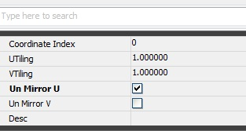

UDN
Search public documentation:
HitMaskCH
English Translation
日本語訳
한국어
Interested in the Unreal Engine?
Visit the Unreal Technology site.
Looking for jobs and company info?
Check out the Epic games site.
Questions about support via UDN?
Contact the UDN Staff
日本語訳
한국어
Interested in the Unreal Engine?
Visit the Unreal Technology site.
Looking for jobs and company info?
Check out the Epic games site.
Questions about support via UDN?
Contact the UDN Staff
击中蒙板组件
概述
实现方法
向 Actor 添加分量
SceneCapture2DHitMaskComponent 是负责渲染为纹理的一个分量。该分量需要附加到 pawn 或骨架网格物体 actor。
// 向 actor 添加击中蒙板
Begin Object Class=SceneCapture2DHitMaskComponent Name=HitMaskComp
End Object
HitMaskComponent=HitMaskComp
Components.Add(HitMaskComp)
根据 Actor 创建材质
除非您想要所有角色共享同一个贴图，否则您可能要创建贴图并将其作为 Hit Mask Component（击中蒙板分量）的渲染目标。
// 创建 64x64 的蒙板材质
MaskTexture = class'TextureRenderTarget2D'.static.Create(64, 64, PF_G8, MakeLinearColor(0, 0, 0, 1));
if ( MaskTexture!=none )
{
// 使用该材质更新 HitMaskComponent
HitMaskComponent.SetCaptureTargetTexture( MaskTexture );
}
向材质添加蒙板
这会将一个圆圈添加到 MaskWorldLocation 的世界位置，其 Radius（半径）的大小与正常测试与否无关。HitMaskComponent.SetCaptureParameters(MaskWorldLocation, Radius, MaskStartLocation, FALSE); // 发送捕获参数如果您不想要在着色器中进行任何方向测试，那么不需要 MaskStartLocation。 例如，如果您想要在角色胸部创建击中伤口，那么在没有击中的地方您不需要渲染角色背后的蒙板，尽管它在半径范围内。 MaskStartLocation 表示初始点，而且最后参数 TRUE（真）将会进行击中正常测试。 如果是 FALSE（假），正常测试将不会进行，而且它只会在世界位置周围创建球体。 由于您不想要在两个地方创建同一个东西，所以会将其创建为 U 非镜像（V 镜像）。
如何为您的角色进行设置
Texture Parameter（贴图参数）
在您的材质中，创建可以在游戏中进行替换的贴图参数。这将会作为我们要创建的目标贴图。 现在，您需要非镜像该贴图。由于我们在渲染它时会非镜像 U，请确保您也的确有可以供 Unmirror U（非镜像 U）采样的贴图。
现在，您需要非镜像该贴图。由于我们在渲染它时会非镜像 U，请确保您也的确有可以供 Unmirror U（非镜像 U）采样的贴图。

在代码中替换贴图参数
现在，是该将蒙板贴图设置为参数的时候了，所以
// 获得第一个参数
MIC = Mesh.CreateAndSetMaterialInstanceConstant(0); // 您想要替换的材质
if ( MIC != none && MaskTexture!=none )
{
// 将新的贴图设置为 FilterMask 参数
MIC.SetTextureParameterValue('FilterMask', MaskTexture); // use this texture to be used by your material
}
参数
- MaterialIndex : 要渲染哪一部分材质？
- ForceLOD : 如果值为 -1，请使用当前的 LOD。
- HitMaskCullDistance : 剔除距离。如果比这个距离远，那么将不会进行测试
淡入淡出相关变量
您可以过一会儿使它淡出。它是调整参数。- FadingStartTimeSinceHit : 最后一次击中后淡入淡出开始时间。默认情况下是 10 秒。如果是 -1，那么它是无极限。如果不断击中，那么它将会停止淡入淡出。
- FadingPercentage : 要应用的颜色 % - 范围从 0 到 1
- FadingDurationTime : 自从淡入淡出开始淡入淡出持续时间 - 以秒为单位
- FadingIntervalTime : 淡入淡出时间间隔 - 以秒为单位